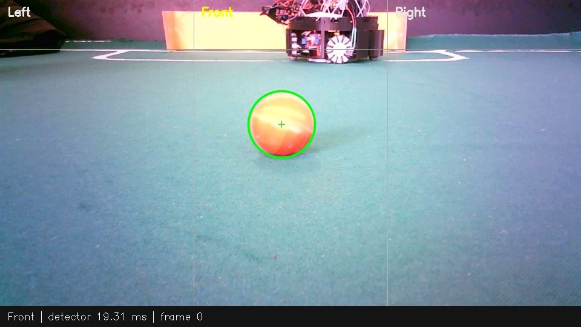

RoboSense
Lab
O que um robô
consegue perceber?
Experimentos de detecção e tracking de bola. Observações, validade dos frames e limites documentados.
Python · OpenCV · NumPy
Ler o caseCódigo no GitHub